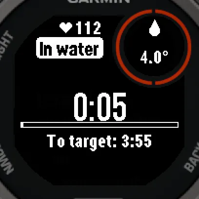

До входу / у воді / після виходу
Верхня кнопка перемикає етапи. Час у воді просто йде — застосунок ніколи не каже вам виходити. Це ваше рішення. Останній час — лише орієнтир, а не ціль, яку треба побити.
На годиннику застосунок називається «Моржування».
Моржування та холодні купання записані як слід — не як плавання.
Або знайдіть «Cold Dip» у застосунку Connect IQ на телефоні.


Зроблено для ополонки, а не для басейну. Рішення завжди за вами.
Верхня кнопка перемикає етапи. Час у воді просто йде — застосунок ніколи не каже вам виходити. Це ваше рішення. Останній час — лише орієнтир, а не ціль, яку треба побити.
Пульс записується весь час. Температуру води ви вводите вручну, і вона зберігається в тренуванні.
Температура повітря, відчутна температура і вітер — з погоди Garmin на телефоні.
Місце входу зберігається і показується на карті в Garmin Connect.
Після кожного заходу — коротка оцінка самопочуття. Також пік і відновлення пульсу, Body Battery і стрес до входу у воду.
Усе зберігається в Garmin Connect як окрема активність, а не як плавання.
Англійська, польська, німецька, чеська, словацька, фінська, норвезька, шведська, іспанська, російська та українська. Застосунок сам перемикається на мову годинника.
Forerunner, Fenix, Epix, Enduro, Venu, Vivoactive, Instinct 2 / 3 / E / Crossover та інші. Не підтримуються дуже старі годинники, наприклад Forerunner 920XT (Connect IQ 1.x).
Введіть модель. Список відповідає 133 годинникам у Cold Dip 1.0.3.
Дуже старі годинники з Connect IQ 1.x, наприклад Forerunner 920XT, підтримати не можна.
Так Cold Dip виглядає на різних екранах Garmin.





Останні версії Cold Dip.
133 моделі, зокрема Instinct 2, Instinct 2S, Instinct 2X, Instinct 3 Solar, Instinct E та Instinct Crossover, а також новий чорно-білий макет для екранів MIP.
126 моделей, зокрема Forerunner 55.
105 моделей, зокрема прямокутні макети для Venu X1 і Venu Sq 2.
Перший випуск.
“Działa idealnie” (Працює ідеально)
Понад 10 хвилин при 5°C — температура води на годиннику, і всі дані збереглися в Garmin Connect.
Кілька речей, про які найчастіше питають після встановлення.
Встановіть його через застосунок Connect IQ Store на телефоні — не через Google Play і не через App Store. На годиннику Cold Dip («Моржування») буде в списку активностей / застосунків.
У профілі «Ополонка» її задають кнопками − / + на стартовому екрані. В інших профілях — через меню: «Темп. води вручну». Якщо у воді видно «--°C», температуру ще не задано.
Відкрийте активність, перейдіть на вкладку «Статистика» і прокрутіть до розділу «Connect IQ». Там будуть пульс, температура води, погода, самопочуття і час етапів. Плитки на екрані «Огляд» задає сам Garmin — застосунок не може їх змінити.
Ні. Годинник не вміє вимірювати температуру тіла. Датчик показує температуру самого годинника, на яку впливають шкіра і повітря. У Cold Dip температуру води ви вводите вручну.
Калорії оцінює сам годинник за пульсом, Cold Dip їх не рахує.
Холодна вода — це серйозно. Це загальні нагадування про безпеку, а не медична порада. Ви самі вирішуєте, коли заходити і коли виходити.
Завжди йдіть із кимось, хто зможе допомогти, якщо щось станеться, або переконайтеся, що за вами хтось стежить з берега.
Якщо ви лише починаєте, звикайте до холоду поступово, а не залишайтеся одразу надовго в дуже холодній воді.
Багато хто починає з короткого часу у воді й лише потім повільно його збільшує. Немає часу, який «треба» витримати.
Виходьте з води, щойно відчуваєте, що треба: при сильному тремтінні, болю, онімінні, сплутаності або просто коли вже досить. Cold Dip ніколи не каже виходити і не ставить час, який треба побити. Останній результат — лише орієнтир.
Якнайшвидше витріться і зігрійтеся, вийшовши з води. Теплий одяг тримайте напоготові ще до входу.
Після виходу температура всередині тіла може ще якийсь час знижуватися, коли холодніша кров повертається зі шкіри та кінцівок. Це часто називають afterdrop. Продовжуйте зігріватися, не поспішайте й зачекайте, доки вам справді стане добре, перш ніж сідати за кермо чи на велосипед.
Cold Dip — застосунок для запису активності, а не медичний виріб, і не дає медичних порад. Він не може сказати, чи безпечно вам заходити в холодну воду. Якщо маєте захворювання, ви вагітні або маєте сумніви, спочатку поговоріть із кваліфікованим фахівцем.
Короткий погляд на одне занурення: від стартового екрана до збереження в Garmin Connect.
Є ідея застосунку або циферблата для Garmin? Зробімо це разом. Напишіть мені й зазначте, який годинник носите.
Якщо ви вже користуєтеся Cold Dip, відгук у Connect IQ дуже допоможе — дякую!
Cold Dip безкоштовний. Якщо він допомагає в моржуванні, ви можете підтримати роботу над ним.
Пригостіть кавою